6 Regression
For the regression models, we have built up what the DAG could look like. These representations are shown below.
Figure 6.1: DAG a simple regression model with 1 predictor
Figure 6.2: DAG for a regression with \(J\) predictors
Figure 6.3: Expanded DAG representation for regression with hyperparameters included
Next, we gave a general representation of how the model specification diagram could be constructed.
Figure 6.4: Model specification diagram for a linear regression model
6.1 Stan Model for Regression Model
model_reg <- '
data {
int N;
real x1[N];
real x2[N];
real y[N];
}
parameters {
real beta[3];
real<lower=0> tau;
}
transformed parameters {
real<lower=0> sigma;
sigma = 1/sqrt(tau);
}
model {
for(i in 1:N){
y[i] ~ normal(beta[1] + beta[2]*x1[i] + beta[3]*x2[i], sigma);
}
beta ~ normal(0, 100);
tau ~ gamma(1, 1);
}
generated quantities {
real varerror;
real vary;
real Rsquared;
real error[N];
for(i in 1:N){
error[i] = y[i] - (beta[1] + beta[2]*x1[i] + beta[3]*x2[i]);
}
varerror = variance(error);
vary = variance(y);
Rsquared = 1 - (varerror/vary);
}
'
# data must be in a list
dat <- read.table("data/Chp4_Reg_Chapter_Tests.dat", header=T)
mydata <- list(
N=nrow(dat),
x1=dat$Ch1Test,
x2=dat$Ch2Test,
y =dat$Ch3Test
)
# start values
start_values <- function(){
list(sigma=1, beta=c(0,0,0))
}
# Next, need to fit the model
# I have explicited outlined some common parameters
fit <- stan(
model_code = model_reg, # model code to be compiled
data = mydata, # my data
init = start_values, # starting values
chains = 4, # number of Markov chains
warmup = 1000, # number of warm up iterations per chain
iter = 5000, # total number of iterations per chain
cores = 4, # number of cores (could use one per chain)
refresh = 0 # no progress shown
)
# first get a basic breakdown of the posteriors
print(fit)## Inference for Stan model: anon_model.
## 4 chains, each with iter=5000; warmup=1000; thin=1;
## post-warmup draws per chain=4000, total post-warmup draws=16000.
##
## mean se_mean sd 2.5% 25% 50% 75% 97.5% n_eff Rhat
## beta[1] -2.51 0.02 1.94 -6.29 -3.81 -2.52 -1.23 1.34 7240 1
## beta[2] 0.66 0.00 0.17 0.33 0.55 0.66 0.77 0.98 6009 1
## beta[3] 0.38 0.00 0.10 0.18 0.31 0.38 0.45 0.59 7692 1
## tau 0.28 0.00 0.06 0.18 0.24 0.28 0.32 0.40 9514 1
## sigma 1.91 0.00 0.20 1.57 1.77 1.90 2.03 2.34 9315 1
## varerror 3.65 0.00 0.16 3.51 3.55 3.60 3.71 4.08 5093 1
## vary 8.79 0.00 0.00 8.79 8.79 8.79 8.79 8.79 2 1
## Rsquared 0.58 0.00 0.02 0.54 0.58 0.59 0.60 0.60 5093 1
## error[1] -0.26 0.02 1.41 -3.06 -1.19 -0.25 0.68 2.51 7462 1
## error[2] 1.71 0.01 0.51 0.71 1.37 1.71 2.04 2.70 7777 1
## error[3] -1.06 0.01 0.57 -2.17 -1.44 -1.05 -0.67 0.05 7145 1
## error[4] -3.20 0.01 0.76 -4.69 -3.71 -3.19 -2.68 -1.72 6726 1
## error[5] -2.81 0.01 0.53 -3.86 -3.15 -2.80 -2.45 -1.77 9813 1
## error[6] 0.43 0.00 0.42 -0.41 0.16 0.43 0.71 1.27 9775 1
## error[7] -1.95 0.00 0.40 -2.76 -2.21 -1.95 -1.69 -1.16 9278 1
## error[8] -6.23 0.00 0.39 -7.02 -6.49 -6.22 -5.96 -5.46 10946 1
## error[9] 3.39 0.00 0.34 2.71 3.17 3.39 3.62 4.05 11804 1
## error[10] 4.01 0.00 0.32 3.38 3.80 4.01 4.22 4.62 11853 1
## error[11] -0.75 0.00 0.36 -1.46 -0.99 -0.75 -0.51 -0.07 9716 1
## error[12] 0.48 0.01 0.49 -0.48 0.15 0.49 0.81 1.43 8412 1
## error[13] 2.48 0.01 0.49 1.52 2.15 2.49 2.81 3.43 8412 1
## error[14] -0.74 0.01 0.70 -2.10 -1.20 -0.73 -0.28 0.63 8370 1
## error[15] 0.35 0.00 0.30 -0.24 0.15 0.35 0.56 0.94 13762 1
## error[16] 0.35 0.00 0.30 -0.24 0.15 0.35 0.56 0.94 13762 1
## error[17] 0.97 0.00 0.28 0.43 0.79 0.97 1.16 1.51 16267 1
## error[18] 1.97 0.00 0.28 1.43 1.79 1.97 2.16 2.51 16267 1
## error[19] -0.41 0.00 0.28 -0.97 -0.60 -0.41 -0.22 0.15 15208 1
## error[20] 1.59 0.00 0.28 1.03 1.40 1.59 1.78 2.15 15208 1
## error[21] 1.21 0.00 0.33 0.57 0.99 1.21 1.43 1.84 12622 1
## error[22] 2.21 0.00 0.33 1.57 1.99 2.21 2.43 2.84 12622 1
## error[23] 0.83 0.00 0.39 0.05 0.57 0.83 1.09 1.58 10727 1
## error[24] 0.83 0.00 0.39 0.05 0.57 0.83 1.09 1.58 10727 1
## error[25] 2.99 0.01 0.89 1.25 2.40 2.99 3.58 4.72 7647 1
## error[26] -1.40 0.01 0.79 -2.94 -1.92 -1.40 -0.87 0.15 7707 1
## error[27] -0.92 0.00 0.44 -1.79 -1.22 -0.92 -0.62 -0.07 8831 1
## error[28] 0.08 0.00 0.44 -0.79 -0.22 0.08 0.38 0.93 8831 1
## error[29] 2.08 0.00 0.44 1.21 1.78 2.08 2.38 2.93 8831 1
## error[30] -1.69 0.00 0.32 -2.32 -1.90 -1.68 -1.47 -1.05 12268 1
## error[31] -0.69 0.00 0.32 -1.32 -0.90 -0.68 -0.47 -0.05 12268 1
## error[32] -0.07 0.00 0.30 -0.65 -0.27 -0.06 0.13 0.52 14903 1
## error[33] 0.93 0.00 0.30 0.35 0.73 0.94 1.13 1.52 14903 1
## error[34] 1.93 0.00 0.30 1.35 1.73 1.94 2.13 2.52 14903 1
## error[35] -1.45 0.00 0.31 -2.06 -1.66 -1.45 -1.24 -0.85 15317 1
## error[36] -0.45 0.00 0.31 -1.06 -0.66 -0.45 -0.24 0.15 15317 1
## error[37] 1.55 0.00 0.31 0.94 1.34 1.55 1.76 2.15 15317 1
## error[38] 0.17 0.00 0.35 -0.52 -0.06 0.17 0.41 0.86 13697 1
## error[39] 1.17 0.00 0.35 0.48 0.94 1.17 1.41 1.86 13697 1
## error[40] -0.21 0.00 0.42 -1.03 -0.48 -0.21 0.07 0.60 12041 1
## error[41] -1.34 0.00 0.43 -2.19 -1.63 -1.35 -1.05 -0.49 8855 1
## error[42] 0.90 0.00 0.37 0.16 0.64 0.90 1.15 1.63 11279 1
## error[43] -3.49 0.00 0.39 -4.24 -3.75 -3.49 -3.23 -2.74 12187 1
## error[44] -2.49 0.00 0.39 -3.24 -2.75 -2.49 -2.23 -1.74 12187 1
## error[45] -1.87 0.00 0.42 -2.69 -2.15 -1.87 -1.59 -1.05 12241 1
## error[46] -0.87 0.00 0.42 -1.69 -1.15 -0.87 -0.59 -0.05 12241 1
## error[47] -0.87 0.00 0.42 -1.69 -1.15 -0.87 -0.59 -0.05 12241 1
## error[48] 0.13 0.00 0.42 -0.69 -0.15 0.13 0.41 0.95 12241 1
## error[49] 0.13 0.00 0.42 -0.69 -0.15 0.13 0.41 0.95 12241 1
## error[50] 0.13 0.00 0.42 -0.69 -0.15 0.13 0.41 0.95 12241 1
## lp__ -59.44 0.02 1.47 -63.16 -60.15 -59.09 -58.37 -57.62 5819 1
##
## Samples were drawn using NUTS(diag_e) at Sun Jun 19 17:31:00 2022.
## For each parameter, n_eff is a crude measure of effective sample size,
## and Rhat is the potential scale reduction factor on split chains (at
## convergence, Rhat=1).
# plot the posterior in a
# 95% probability interval
# and 80% to contrast the dispersion
plot(fit)## 'pars' not specified. Showing first 10 parameters by default.## ci_level: 0.8 (80% intervals)## outer_level: 0.95 (95% intervals)

# Gelman-Rubin-Brooks Convergence Criterion
p1 <- ggs_grb(ggs(fit, family = "beta")) +
theme_bw() + theme(panel.grid = element_blank())
p2 <- ggs_grb(ggs(fit, family = "sigma")) +
theme_bw() + theme(panel.grid = element_blank())
p1 + p2
# autocorrelation
p1 <- ggs_autocorrelation(ggs(fit, family="beta")) +
theme_bw() + theme(panel.grid = element_blank())
p2 <- ggs_autocorrelation(ggs(fit, family="sigma")) +
theme_bw() + theme(panel.grid = element_blank())
p1 + p2
# plot the posterior density
plot.data <- as.matrix(fit)
plot_title <- ggtitle("Posterior distributions",
"with medians and 80% intervals")
mcmc_areas(
plot.data,
pars = c("beta[1]", "beta[2]", "beta[3]", "sigma"),
prob = 0.8) +
plot_title
mcmc_areas(
plot.data,
pars = c("Rsquared"),
prob = 0.8) +
plot_title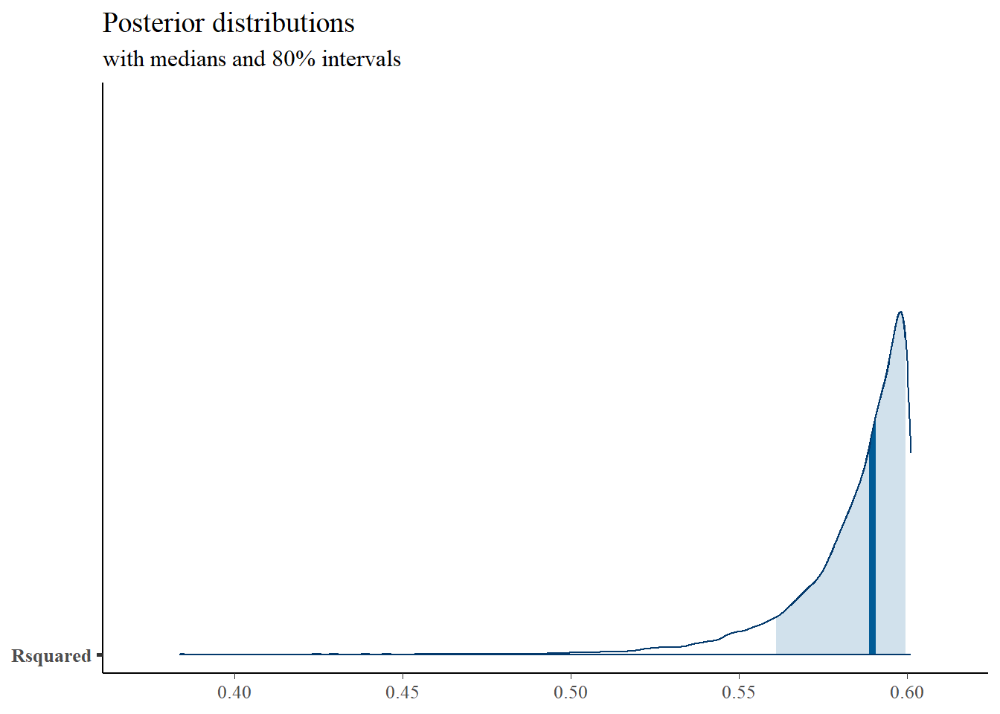
# I prefer a posterior plot that includes prior and MLE
# Expanded Posterior Plot
fit.lm <- summary(lm(Ch3Test ~ 1 + Ch1Test + Ch2Test, data=dat))
MLE <- c(fit.lm$coefficients[,1], fit.lm$sigma**2, fit.lm$r.squared)
prior_beta <- function(x){dnorm(x, 0, 1000)}
x.beta <- seq(-10, 4.99, 0.01)
prior.beta <- data.frame(beta=x.beta, dens.beta = prior_beta(x.beta))
prior_sig <- function(x){dgamma(x, 1, 1)}
x.sig <- seq(0.01, 2.5, 0.01)
prior.sig <- data.frame(sig=x.sig, dens.sig = prior_sig(x.sig))
cols <- c("Posterior"="#0072B2", "Prior"="#E69F00", "MLE"= "black")#"#56B4E9", "#E69F00" "#CC79A7"
plot.data <- as.data.frame(plot.data)
p1 <- ggplot()+
geom_density(data=plot.data,
aes(x=`beta[1]`, color="Posterior"))+
geom_line(data=prior.beta,
aes(x=beta, y=dens.beta, color="Prior"))+
geom_vline(aes(xintercept=MLE[1], color="MLE"))+
scale_color_manual(values=cols, name=NULL)+
theme_bw()+
theme(panel.grid = element_blank())
p2 <- ggplot()+
geom_density(data=plot.data,
aes(x=`beta[2]`, color="Posterior"))+
geom_line(data=prior.beta,
aes(x=beta, y=dens.beta, color="Prior"))+
geom_vline(aes(xintercept=MLE[2], color="MLE"))+
scale_color_manual(values=cols, name=NULL)+
lims(x=c(0, 1))+
theme_bw()+
theme(panel.grid = element_blank())
p3 <- ggplot()+
geom_density(data=plot.data,
aes(x=`beta[3]`, color="Posterior"))+
geom_line(data=prior.beta,
aes(x=beta, y=dens.beta, color="Prior"))+
geom_vline(aes(xintercept=MLE[3], color="MLE"))+
scale_color_manual(values=cols, name=NULL)+
lims(x=c(0, 1))+
theme_bw()+
theme(panel.grid = element_blank())
p4 <- ggplot()+
geom_density(data=plot.data,
aes(x=sigma, color="Posterior"))+
geom_line(data=prior.sig,
aes(x=sig, y=dens.sig, color="Prior"))+
geom_vline(aes(xintercept=MLE[4], color="MLE"))+
scale_color_manual(values=cols, name=NULL)+
theme_bw()+
theme(panel.grid = element_blank())
p5 <- ggplot()+
geom_density(data=plot.data,
aes(x=Rsquared, color="Posterior"))+
geom_vline(aes(xintercept=MLE[5], color="MLE"))+
scale_color_manual(values=cols, name=NULL)+
lims(x=c(0, 1))+
theme_bw()+
theme(panel.grid = element_blank())
p1 + p2 + p3 + p4 + p5 + plot_layout(guides="collect")## Warning: Removed 307 rows containing non-finite values (stat_density).## Warning: Removed 1399 row(s) containing missing values (geom_path).## Warning: Removed 1 rows containing non-finite values (stat_density).## Warning: Removed 1399 row(s) containing missing values (geom_path).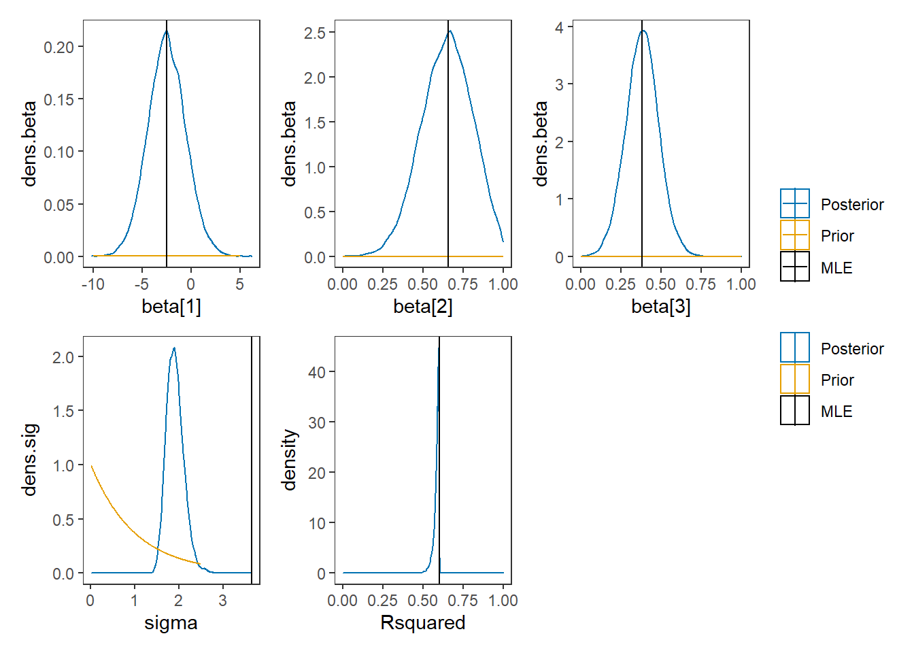
6.2 JAGS Model for Regression Model
# model code
jags.model <- function(){
############################################
# Prior distributions
############################################
beta.0 ~ dnorm(0, .001) # prior for the intercept
beta.1 ~ dnorm(0, .001) # prior for coefficient 1
beta.2 ~ dnorm(0, .001) # prior for coefficient 2
tau.e ~ dgamma(1, 1) # prior for the error precision
sigma.e <- 1/sqrt(tau.e) # standard deviation of the errors
############################################
# Conditional distribution of the data
# Via a regression model
############################################
for(i in 1:n){
y.prime[i] <- beta.0 + beta.1*x1[i] + beta.2*x2[i]
y[i] ~ dnorm(y.prime[i], tau.e)
}
############################################
# Calculate R-squared
############################################
for(i in 1:n){
error[i] <- y[i] - y.prime[i]
}
var.error <- sd(error[])*sd(error[])
var.y <- sd(y[])*sd(y[])
R.squared <- 1 - (var.error/var.y)
}
# data
dat <- read.table("data/Chp4_Reg_Chapter_Tests.dat", header=T)
mydata <- list(
n=nrow(dat),
x1=dat$Ch1Test,
x2=dat$Ch2Test,
y =dat$Ch3Test
)
# starting values
start_values <- function(){
list("tau.e"=0.01, 'beta.0'=0, "beta.1"=0, "beta.2"=0)
}
# vector of all parameters to save
param_save <- c("tau.e", "beta.0", "beta.1", "beta.2", "R.squared")
# fit model
fit <- jags(
model.file=jags.model,
data=mydata,
inits=start_values,
parameters.to.save = param_save,
n.iter=4000,
n.burnin = 1000,
n.chains = 4,
n.thin=1,
progress.bar = "none")## Compiling model graph
## Resolving undeclared variables
## Allocating nodes
## Graph information:
## Observed stochastic nodes: 50
## Unobserved stochastic nodes: 4
## Total graph size: 262
##
## Initializing model
print(fit)## Inference for Bugs model at "C:/Users/noahp/AppData/Local/Temp/RtmpQR8sbs/model45445b7f5ecf.txt", fit using jags,
## 4 chains, each with 4000 iterations (first 1000 discarded)
## n.sims = 12000 iterations saved
## mu.vect sd.vect 2.5% 25% 50% 75% 97.5% Rhat n.eff
## R.squared 0.584 0.018 0.536 0.578 0.590 0.597 0.601 1.003 12000
## beta.0 -2.540 1.926 -6.328 -3.825 -2.548 -1.239 1.257 1.001 12000
## beta.1 0.657 0.166 0.331 0.546 0.658 0.767 0.985 1.001 8600
## beta.2 0.383 0.103 0.182 0.315 0.384 0.452 0.583 1.001 8800
## tau.e 0.282 0.057 0.182 0.242 0.278 0.318 0.403 1.001 12000
## deviance 207.594 2.940 204.053 205.535 206.932 208.959 214.755 1.001 12000
##
## For each parameter, n.eff is a crude measure of effective sample size,
## and Rhat is the potential scale reduction factor (at convergence, Rhat=1).
##
## DIC info (using the rule, pD = var(deviance)/2)
## pD = 4.3 and DIC = 211.9
## DIC is an estimate of expected predictive error (lower deviance is better).
# extract posteriors for all chains
jags.mcmc <- as.mcmc(fit)
R2jags::traceplot(jags.mcmc)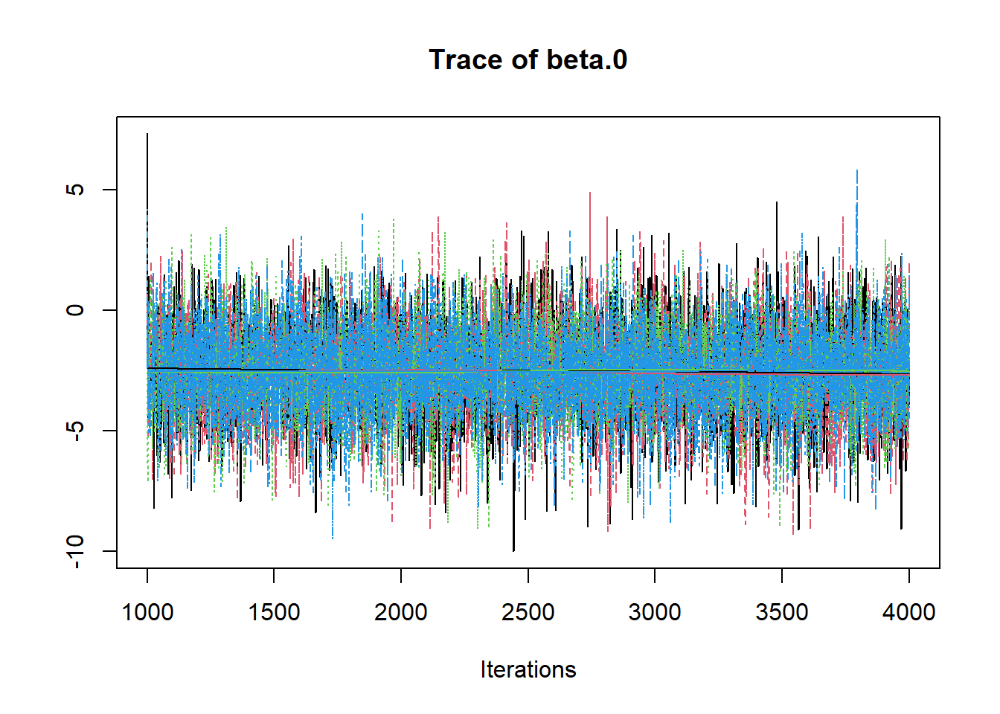 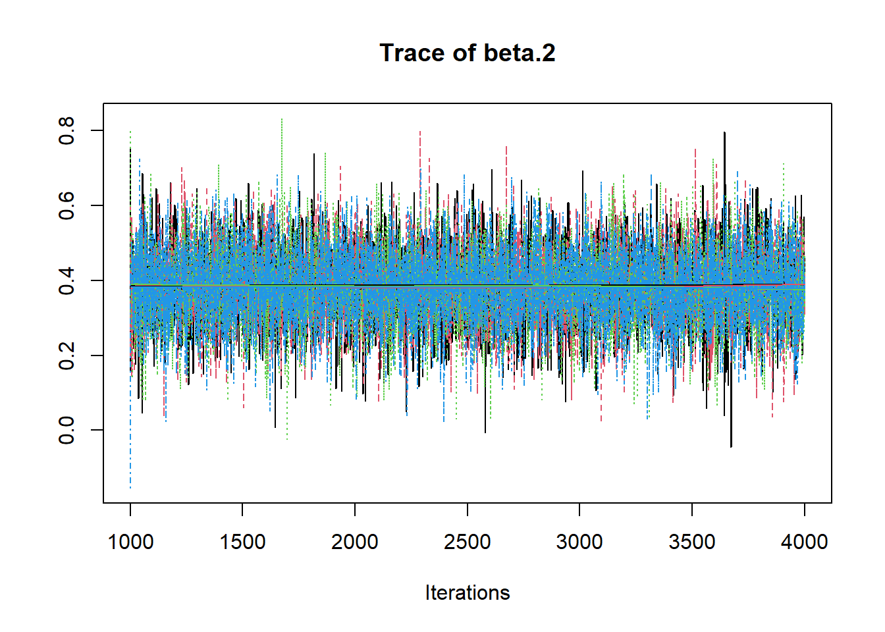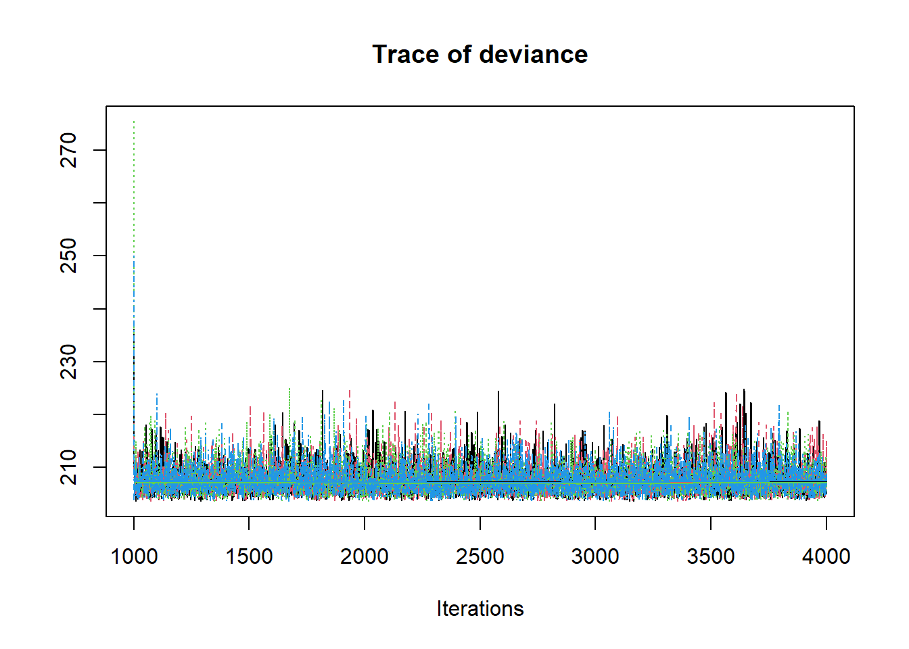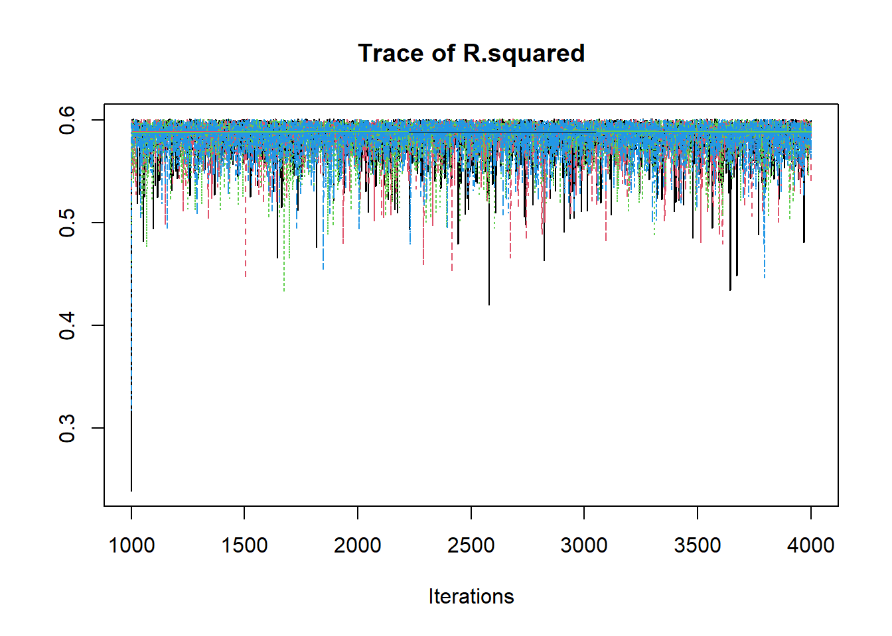
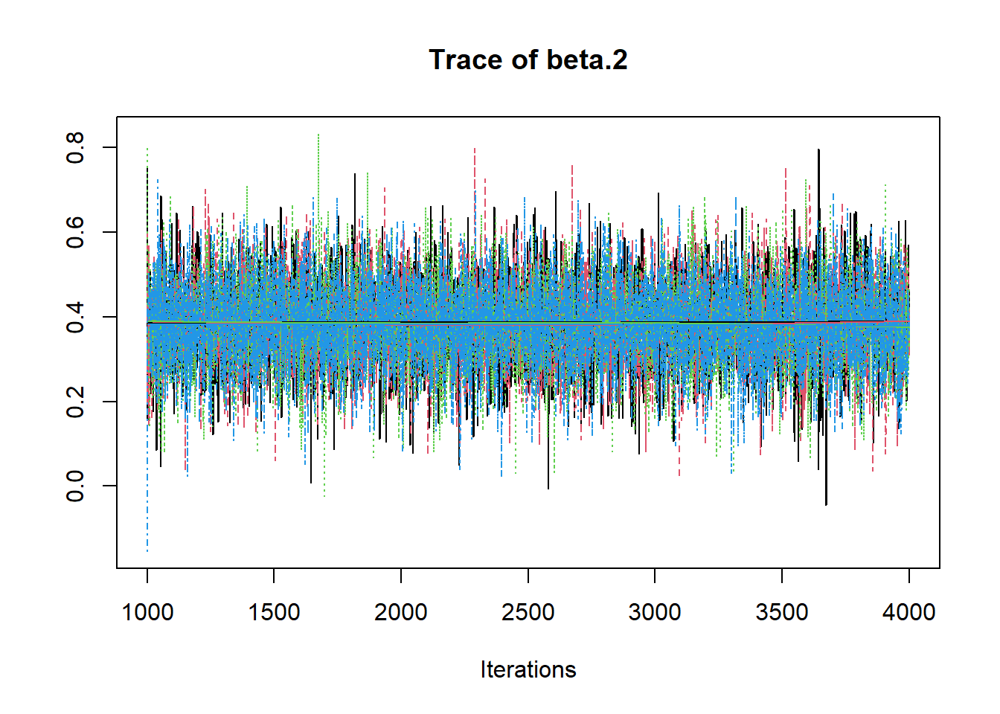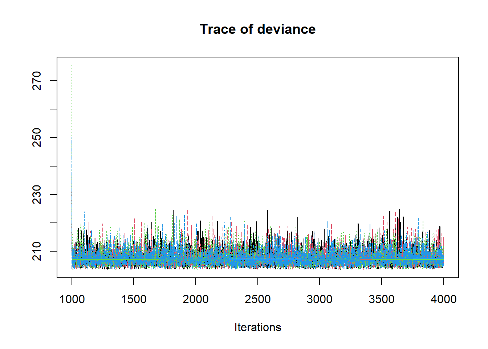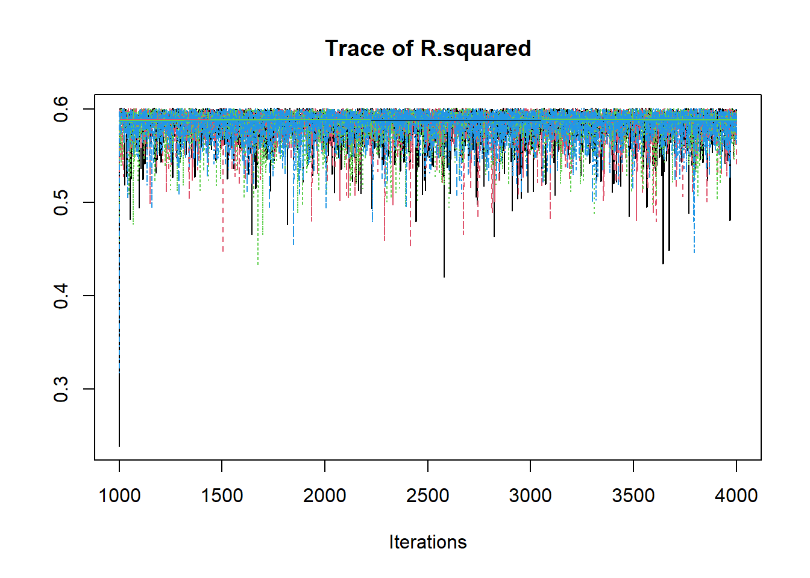
# gelman-rubin-brook
gelman.plot(jags.mcmc)
# convert to single data.frame for density plot
a <- colnames(as.data.frame(jags.mcmc[[1]]))
plot.data <- data.frame(as.matrix(jags.mcmc, chains=T, iters = T))
colnames(plot.data) <- c("chain", "iter", a)
plot_title <- ggtitle("Posterior distributions",
"with medians and 80% intervals")
mcmc_areas(
plot.data,
pars = c("beta.0", "beta.1", "beta.2", "tau.e"),
prob = 0.8) +
plot_title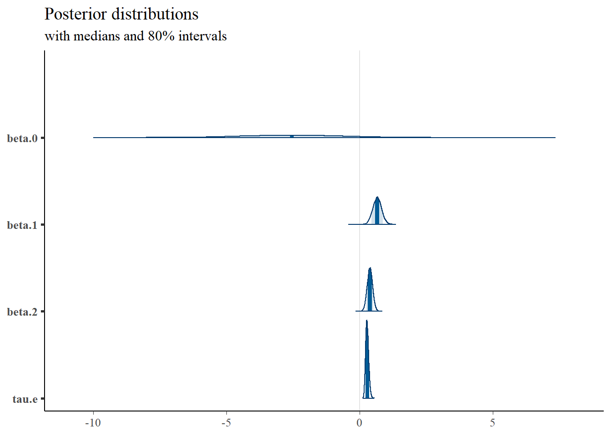
mcmc_areas(
plot.data,
pars = c("R.squared"),
prob = 0.8) +
plot_title
# Expanded Posterior Plot
fit.lm <- summary(lm(Ch3Test ~ 1 + Ch1Test + Ch2Test, data=dat))
MLE <- c(fit.lm$coefficients[,1], 1/fit.lm$sigma**2, fit.lm$r.squared)
prior_beta <- function(x){dnorm(x, 0, 1000)}
x.beta <- seq(-5, 4.99, 0.01)
prior.beta <- data.frame(beta=x.beta, dens.beta = prior_beta(x.beta))
prior_tau <- function(x){dgamma(x, 1, 1)}
x.tau <- seq(0.01, 0.50, 0.01)
prior.tau <- data.frame(tau=x.tau, dens.tau = prior_tau(x.tau))
cols <- c("Posterior"="#0072B2", "Prior"="#E69F00", "MLE"= "black")#"#56B4E9", "#E69F00" "#CC79A7"
p1 <- ggplot()+
geom_density(data=plot.data,
aes(x=beta.0, color="Posterior"))+
geom_line(data=prior.beta,
aes(x=beta, y=dens.beta, color="Prior"))+
geom_vline(aes(xintercept=MLE[1], color="MLE"))+
scale_color_manual(values=cols, name=NULL)+
theme_bw()+
theme(panel.grid = element_blank())
p2 <- ggplot()+
geom_density(data=plot.data,
aes(x=beta.1, color="Posterior"))+
geom_line(data=prior.beta,
aes(x=beta, y=dens.beta, color="Prior"))+
geom_vline(aes(xintercept=MLE[2], color="MLE"))+
scale_color_manual(values=cols, name=NULL)+
lims(x=c(0, 1))+
theme_bw()+
theme(panel.grid = element_blank())
p3 <- ggplot()+
geom_density(data=plot.data,
aes(x=beta.2, color="Posterior"))+
geom_line(data=prior.beta,
aes(x=beta, y=dens.beta, color="Prior"))+
geom_vline(aes(xintercept=MLE[3], color="MLE"))+
scale_color_manual(values=cols, name=NULL)+
lims(x=c(0, 1))+
theme_bw()+
theme(panel.grid = element_blank())
p4 <- ggplot()+
geom_density(data=plot.data,
aes(x=tau.e, color="Posterior"))+
geom_line(data=prior.tau,
aes(x=tau, y=dens.tau, color="Prior"))+
geom_vline(aes(xintercept=MLE[4], color="MLE"))+
scale_color_manual(values=cols, name=NULL)+
theme_bw()+
theme(panel.grid = element_blank())
p5 <- ggplot()+
geom_density(data=plot.data,
aes(x=R.squared, color="Posterior"))+
geom_vline(aes(xintercept=MLE[5], color="MLE"))+
scale_color_manual(values=cols, name=NULL)+
lims(x=c(0.5, 0.65))+
theme_bw()+
theme(panel.grid = element_blank())
p1 + p2 + p3 + p4 + p5 + plot_layout(guides="collect")## Warning: Removed 243 rows containing non-finite values (stat_density).## Warning: Removed 899 row(s) containing missing values (geom_path).## Warning: Removed 4 rows containing non-finite values (stat_density).## Warning: Removed 899 row(s) containing missing values (geom_path).## Warning: Removed 53 rows containing non-finite values (stat_density).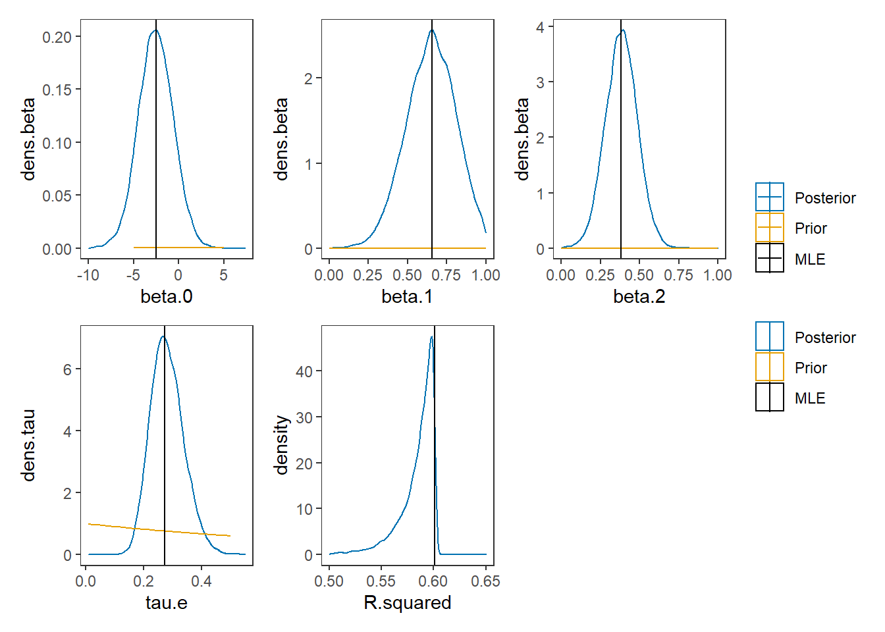